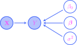

THIS CHAPTER IS CURRENTLY UNDER CONSTRUCTION!!!
13. Statistics and general parameter estimation#
13.1. Statistics#
Definition 13.1
Let \(\bX\) be a \(k\)-dimensional random vector. A (\(d\)-dimensional) statistic is a random vector of the form
where \(r:\bbr^k \to \bbr^d\) is a vector-valued function. An observed value \(t\) of \(T\) is called an observed statistic or empirical statistic.
If we conceptualize the random vector \(\bX\) as (theoretical) data, then a statistic is simply a function of the data. Crucially important examples of statistics include those defined as follows:
Definition 13.2
Let \(\bX = (X_1,\ldots,X_m)\) be an \(m\)-dimensional random vector. The sample mean is defined to be the statistic
while the sample variance is defined to be the statistic
The corresponding empirical statistics are the empirical mean and empirical variance defined as
Very often, the component random variables \(X_1,\ldots,X_m\) of the random vector \(\bX\) in the definition are assumed to form a random sample, i.e., an IID sequence of random variables. The dimension \(m\) is then referred to as the sample size. In principle, then, the sample size \(m\) can be any positive integer, and so it is often convenient to write \(\overline{X}_m\) for the sample mean, explicitly displaying the sample size. This gives us an entire infinite sequence of sample means:
Since statistics are random vectors, they have their own probability distributions. These are given special names:
Definition 13.3
The probability distribution of a statistic \(T\) is called the sampling distribution of \(T\).
The sampling distributions for sample means \(\overline{X}_m\) are particularly important, and one of the main goals of Chapter 14 is to study the limiting behavior (or asymptotic behavior) of the sampling distributions in the sequence (13.1) as \(m\to \infty\).
In general, however, computing the sampling distributions is difficult. But if we actually have observed data \(x_1,x_2,\ldots,x_m\), then (as you will explore in the programming assignment) there is a resampling method known as bootstrapping that yields approximations to sampling distributions. An example is given by the histogram (with KDE) on the right-hand side of the following figure, where a histogram (with KDE) of the empirical distribution of an observed dataset is given on the left-hand side:
Show code cell source
import numpy as np
import scipy as sp
import seaborn as sns
import pandas as pd
import matplotlib.pyplot as plt
import scipy as sp
import matplotlib_inline.backend_inline
import matplotlib.colors as clr
import warnings
plt.style.use('../aux-files/custom_style_light.mplstyle')
matplotlib_inline.backend_inline.set_matplotlib_formats('svg')
warnings.filterwarnings("ignore")
blue = '#486AFB'
magenta = '#FD46FC'
np.random.seed(42)
X = sp.stats.gamma(a=5)
sample_size = 100
resample_size = 1000
random_sample = X.rvs(size=sample_size)
replicate_means = []
num_resamples = 10000
for _ in range(num_resamples):
sample = np.random.choice(a=random_sample, size=resample_size, replace=True)
replicate_means.append(sample.mean())
_, axes = plt.subplots(ncols=2, figsize=(10, 3))
sns.histplot(x=random_sample, ec='black', stat='density', kde=True, ax=axes[0])
sns.histplot(x=replicate_means, ec='black', stat='density', kde=True, ax=axes[1])
axes[0].set_xlabel('$x$')
axes[0].set_ylabel('density')
axes[0].set_title('observed data')
axes[1].set_xlabel('$x$')
axes[1].set_ylabel('density')
axes[1].set_title('bootstrap sampling distribution of sample mean')
plt.tight_layout()
Observe that the sampling distribution on the right-hand side appears to be well approximated by a normal distribution. This is actually a manifestation of the asymptotic behavior of sample means that we alluded to above; indeed, as we will see in Chapter 14, the Central Limit Theorem tells us that the sequence (13.1) of sample means converges (in distribution) to a normal distribution as \(m\to \infty\), provided that the random variables are IID. This is true even though the observed data are definitely not normally distributed. Moreover, the mean of the sampling distribution is approximately \(4.924\), while the mean of the observed data is approximately \(4.928\). The fact that these means are nearly equal is a consequence of another theorem in Chapter 14 called the Law of Large Numbers. These asymptotic results provide the foundation for the large-sample confidence intervals that we will construct in Chapter 15.
Let’s consider the sample mean a little closer:
Theorem 13.1 (Properties of the sample mean)
Let \(X_1,\ldots,X_m\) be an IID random sample from a distribution with mean \(\mu\) and standard deviation \(\sigma\).
The expectation of the sample mean \(\overline{X}\) is \(\mu\).
The variance of the sample mean \(\overline{X}\) is \(\sigma^2/m\), and hence its standard deviation is \(\sigma/\sqrt{m}\).
If the \(X_i\)’s are normally distributed, then so too is the sample mean \(\overline{X}\).
You will prove this theorem as
13.2. General parametric models#
Abstracting away all the intricate particularities of the fully-observed probabilistic graphical models in Chapter 11 reveals that they all are examples of the following type of general structure:
Definition 13.4
Let \(\bX\) be a \(k\)-dimensional random vector and let \(\Omega\) be a (nonempty) subset of a Euclidean space \(\bbr^d\). A parametric probabilistic model (or simply a parametric model) for \(\bX\) is a specification of a dependence of the probability distribution of \(\bX\) on values \(\btheta \in \Omega\). In other words, a parametric model is simply a family
of probability distributions on \(\bbr^k\) such that \(\bX \sim P_\btheta\). In this context, the set \(\Omega\) is called the parameter space, each \(\btheta \in \Omega\) is called a (\(d\)-dimensional) parameter, and the vector \(\bX\) is called the data.
Very often, we shall specify a parametric model (13.2) by listing the density functions of the probability measures \(P_\btheta\), provided that these exist. In other words, we will write
The simplest examples of parametric models are the univariate models introduced and studied in Chapter 5. Indeed, if we have \(X \sim \Ber(\theta)\), then
is a parametric model with \(1\)-dimensional parameter space \(\Omega = [0,1]\). Similarly, if we have \(X\sim \calN(\mu,\sigma^2)\), then
is a parametric model with \(2\)-dimensional parameter space \(\Omega = \bbr \times (0,\infty)\).
As we mentioned above, all the fully-observed probabilistic graphical models studied in Chapter 11 are examples of this general type of parametric model. For example, a linear regression model with \(n\)-dimensional predictor vector \(\bX\) and response variable \(Y\) defines a parametric model
with \((n+2)\)-dimensional parameter space \(\Omega = \bbr \times \bbr^n \times (0,\infty)\) and where
In this latter example, notice that the \((n+1)\)-dimensional random vector \((\bX,Y)\) plays the roll of the vector \(\bX\) in Definition 13.5 (so that \(k=n+1\)).
The “plated” versions of the fully-observed PGMs in Chapter 11 also define parametric models in the sense of Definition 13.5. For example, a “plated” version of our linear regression model from above would define the parametric model
where \(\Omega\) is the same parameter space as above and where
In this case, the \((mn + m)\)-dimensional random vector \((\bX_1,\ldots,\bX_m,y_1,\ldots,y_m)\) plays the roll of the vector \(\bX\) in Definition 13.5 (so that \(k=mn+m\)).
13.3. Parameter estimators#
Definition 13.5
Let \(\calP_0\) be a parametric model for a \(k\)-dimensional random vector \(\bX\) with \(d\)-dimensional parameter space \(\Omega\). A parameter estimator (or simply an estimator) is a statistic
where \(\delta: \bbr^k \to \bbr^d\) is a vector-valued function. An observed value of \(\hatbtheta\) is called a point estimate.
There will be much abuse of terminology and notation regarding parameter estimators; it seems wise, then, to formally issue the following:
Warning
Following our previously established convention of representing random objects with capital letters, we should write a parameter estimator as \(\widehat{\boldsymbol \Theta}\), where \(\boldsymbol\Theta\) is a capital theta. However, this is notationally awkward, so we will not do this.
Though technically the parameter estimator is the random vector \(\hatbtheta\), we will use the word estimator to also refer to the function \(\delta\). Moreover, we will often use the notations \(\hatbtheta\) and \(\delta\) interchangeably.
To complicate things even more, we will sometimes write \(\hatbtheta\) to refer to a point estimate.
Thus, the single piece of notation \(\hatbtheta\) might stand for one of three things: Either the random vector \(\delta(\bX)\), the function \(\delta\), or an observed value of the random vector \(\delta(\bX)\). You will need to rely on context to determine which of these three objects is meant when you encounter the symbol \(\hatbtheta\).
13.4. Blah#
So far, the only method that we have for estimating (or learning) the parameter vector \(\btheta\) of a probabilistic model is the method of maximum likelihood estimation that we studied in detail in Chapter 12. However, as we will see in the present chapter, there are other methods for parameter estimation. The general paradigm in which we shall study these methods begins with the following fundamental definition:
Definition 13.6
Let \(\bX\) be a \(k\)-dimensional random vector whose probability distribution is parametrized by a \(d\)-dimensional parameter vector \(\btheta\). Then a parameter estimator (or simply an estimator) is a function
If we plug in the random vector \(\bX\), we obtain a \(d\)-dimensional random vector
An observed value of the random vector \(\hatbtheta\) is called a parameter estimate.
It will very often be the case that \(\bX\) is a random vector of the form
where each \(\bY^{(i)}\) is an \(n\)-dimensional random vector (so \(k=mn\)) that make up an IID random sample whose common distribution is parametrized by a parameter vector \(\btheta\). By independence, the probability function of \(\bX\) is then given by the product
where \(p(\by^{(i)};\btheta)\) is the probability function of \(\bY^{(i)}\).
Before continuing, I need to warn you of (many) upcoming abuses of notation and terminology:
With the warning properly issued, let’s move on.
First, we note that maximum likelihood estimation defines a parameter estimator denoted \(\bthetaMLE\). Indeed, supposing that \(\bx^{(1)},\ldots,\bx^{(m)}\) is an observation of an IID random sample with data likelihood function
we define
provided that a unique maximizing argument exists. The single acroynm MLE will stand either for the particular estimate \(\bthetaMLE\), in which case it stands for maximum likelihood estimate, or it will stand for the obtained estimator (function), in which case it stands for maximum likelihood estimator. You will need to rely on context to clarify the intended meaning when this acroynm is encountered.
Notice that Definition 13.6 is extremely general. Even though we write \(\hatbtheta = \delta(\bX)\), there really does not have to be any a priori connection between \(\delta\) and \(\btheta\) for the former to be called an estimator of the latter. In fact, \(\delta\) might be a constant function which outputs a single vector for all choices of input; in all but very trivial cases, such an “estimator” does a terrible job of estimating the true value of the parameter.
An example will help clarify matters. Suppose that we have a simple univariate binomial model \(X \sim \Bin(100,\theta)\) for some unknown parameter \(\theta \in (0,1)\). It is not difficult to show that the maximum likelihood estimate is given by \(\thetaMLE = x/100\). However, the two formulas
also define legitimate estimators for \(\theta\), at least according to Definition 13.6. They might seem to have been pulled out of the blue, but as we will see below, they are both examples of maximum a posteriori estimators and (as the name suggests) they were obtained as solutions to an optimization problem similar to the MLE.
An entire infinite universe full of potential parameter estimators calls for a method for comparing estimators. One such method goes through the following objects:
Definition 13.7
A loss function is a real-valued function
In our present context, loss functions serve as metrics for the quality of a parameter estimate. The vector \(\ba\) is conceptualized as an estimate of a parameter \(\btheta\), and the value \(L(\btheta,\ba)\) is the “loss incurred” in the estimation. Very often we have \(L(\btheta,\ba)\geq 0\) for all inputs, and the smaller the loss the better the estimate.
In particular, we may plug an estimator \(\delta\) directly into a loss function to obtain values \(L\big(\btheta, \delta(\bx)\big)\). This number is the loss incurred when we estimate the particular parameter value \(\btheta\) using \(\delta\) and the observed value \(\bx\). However, this is only a “local” measure of the performance of the estimator \(\delta\) evaluated on just a single observation \(\bx\) and parameter vector \(\btheta\). In order to obtain a “global” measure of the performance of \(\delta\), we may average over all observations of the dataset. This leads us to:
Definition 13.8
Let \(\btheta\) be a parameter vector, \(L\) a loss function, and \(\delta\) a parameter estimator. Then the risk associated with \(\delta\) (relative to \(L\)) is given by
where the expectation is taken with respect to the probability function \(p(\bx;\btheta)\).
So, we might hope to compare and rank parameter estimators by comparing their risks (with respect to some fixed loss function). But there’s a problem, because risks are technically functions of the parameter \(\btheta\), and functions may not always be linearly ranked since their graphs might cross. For example, let’s return to our binomial model \(X\sim \Bin(100,\theta)\) and the three parameter estimators
One very common loss function is the squared error loss given by
With respect to this loss, the risks of the three estimators are given by
and
If we plot these risks, we get:
Show code cell source
def risk_mle(theta):
return theta * (1 - theta) / 100
def risk_1(theta):
return (25 + 8 * theta * (5 - 8 * theta)) / 11236
def risk_2(theta):
return (1 + 8 * theta * (11 - 8 * theta)) / 11236
grid = np.linspace(0, 1)
plt.plot(grid, risk_mle(grid), label='$R(\\theta,\widehat{\\theta}_{\\text{mle}})$')
plt.plot(grid, risk_1(grid), label='$R(\\theta,\widehat{\\theta}_1)$', linestyle='dashdot')
plt.plot(grid, risk_2(grid), color=magenta, label='$R(\\theta,\widehat{\\theta}_2)$', linestyle='dotted')
plt.gcf().set_size_inches(5, 3)
plt.xlabel('$\\theta$')
plt.ylabel('risk')
plt.legend()
plt.tight_layout()
Notice that there is no way to linearly rank these risks. For any one of them, there are certain parameter values where that risk is smaller than the others, while for other parameter values, it is larger. In particular:
For \(\theta=0.5\), the MLE is less risky (on average) compared to the other two.
For \(\theta=0.75\) the estimator \(\hattheta_1\) is less risky (on average) than the other two.
For \(\theta=0.25\) the estimator \(\hattheta_2\) is less risky (on average) than the other two.
The squared error loss is one of the most common loss functions; two other common losses are called the absolute error loss and 0/1 loss. These are all defined officially in:
Definition 13.9
Let \(\delta\) be a parameter estimator.
The loss function
\[ L:\bbr \times \bbr \to \bbr, \quad L(\theta,a) = (\theta-a)^2, \]is called the squared error loss. The risk of \(\delta\) associated with this loss is called the mean squared error and is denoted \(\MSE(\delta)\).
The loss function
\[ L:\bbr \times \bbr \to \bbr, \quad L(\theta,a) = |\theta-a|, \]is called the absolute error loss. The risk of \(\delta\) associated with this loss is called the mean absolute error and is denoted \(\MAE(\delta)\).
The loss function
\[\begin{split} L:\bbr^d \times \bbr^d \to \bbr, \quad L(\btheta,\ba) = \begin{cases} 0 & : \btheta = \ba, \\ 1 & : \btheta \neq \ba, \end{cases} \end{split}\]is called the 0/1 loss.
Observe that the notations \(\MSE(\delta)\) and \(\MAE(\delta)\), while descriptive, hide the fact that both of these risks are functions of the parameter \(\theta\).
Another example of “crossing risks” is given in:
Problem Prompt
Do problem 1 on the worksheet.
13.5. Bayesian models#
In some sense, the parameter estimation and comparison scheme described in the previous section does not align well with real world practice. For example, in computing the risk \(R(\btheta,\delta)\) of an estimator \(\delta\), we average over all possible observations of the dataset. But in real life, the dataset is often fixed, and we may not be particularly concerned with the performance of our estimator on datasets other than the one in our hands. An alternate way to approach parameter estimation and comparison conceptualizes the dataset as fixed, while taking the parameter vector \(\btheta\) as a random vector itself. This latter conceptual scheme is called Bayesian modeling.
The Bayesian scheme also allows parameter estimation methods that produce more than just simple numerical estimates, the latter often called point estimates in this context. Indeed, Bayesian parameter estimation produces an entire probability distribution for each parameter, called the posterior distribution of the parameter, which are conditioned on the observed dataset. From these latter distributions, we may extract point estimates such as the (posterior) means, medians, and modes. However, it is really the full posterior distributions that are of most interest.
In order to obtain these posterior distributions, which are obtained as the end result of Bayesian parameter estimation, we need to begin with initial distributions on the parameters called prior distributions. The work that goes into cooking up the prior distributions is the price we pay to use Bayesian modeling. The prior distributions reflect our prior knowledge (hence the name) of the parameters heading into the problem, and entire chapters in textbooks devoted to Bayesian statistics concern best practices for selecting good prior distributions. We will only barely mention some of these ideas. In any case, no matter how the prior distributions are chosen, the mathematical mechanism that carries us from the prior to the posterior distributions via the dataset is exactly Bayes’ Theorem.
Mathematically, the transition from the probabilistic graphical models described in Chapter 11 to Bayesian ones is incredibly easy: All you do is treat each parameter as an unobserved random variable or vector. For example, remember that the underlying graph of a linear regression model is given by

To turn this into a Bayesian linear regression model, we simply do this:
{kind=link}
For our very simple univariate binomial model \(X\sim \Bin(100, \theta)\) in the previous section, we would consider the following graph:
{kind=link}
In this latter example, we might suppose that \(X\) counts the number of heads in \(100\) flips of a coin that shows heads with probability \(\theta\). We might even imagine that we are in the scenario described in Section 7.10, where we are playing a coin flipping game with an untrustworthy friend: If the coin shows heads, our friend wins; otherwise, we win. Our suspicion that our friend is untrustworthy and that the coin prefers heads with probability \(\theta>0.5\) could be encoded by using the prior distribution
so that the prior mean of \(\theta\) is \(0.75\). Carrying through the same computations in Section 7.10 using Bayes’ Theorem, we see that the posterior distribution of the parameter has probability function \(p(\theta| x)\) given (on its support) by
In particular, the posterior distribution is \(\Beta(x + 6, 102 - x)\). If we want to obtain a point estimate for the parameter from the posterior distribution, we may take the posterior mode (global maximizer) which is easily seen to be
Note that this is exactly the point estimate \(\hattheta_1\) described above in (13.4). As we mentioned there, this point estimate is called a maximum a posteriori (MAP) estimate.
Problem Prompt
Do problem 2 on the worksheet.
13.6. Bayes estimators#
In the Bayesian framework, a new type of risk becomes the central object of interest:
Definition 13.10
Let \(\btheta\) be a random parameter vector, \(L\) be a loss function, and \(\delta\) a parameter estimator. Then the posterior risk associated with \(\delta\) (relative to \(L\)) is given by
where the expectation is taken with respect to the posterior probability function \(p(\btheta | \bx)\).
In contrast to the risk \(R(\btheta,\delta)\), which is a function of \(\btheta\), notice that the posterior risk is a function of \(\bx\) where the dependence on \(\btheta\) has been averaged out. This means that for a fixed dataset, the posterior risks associated with different estimators are real numbers instead of functions, and thus may be linearly ranked. In principle, then, we can always choose the optimal estimator in the Bayesian framework simply by choosing the one with the smallest posterior risk. These optimal estimators have names:
Definition 13.11
Let \(\btheta\) be a random parameter vector and \(L\) a loss function. The function
is called a Bayes estimator of \(\btheta\), where the expectation is taken with respect to the posterior probability function \(p(\btheta | \bx)\).
For certain loss functions, the Bayes estimators have particularly nice descriptions in terms of summary statistics of the posterior distributions.
Theorem 13.2 (Common Bayes estimators)
Let \(\btheta\) be a random parameter.
With respect to the squared error loss, the Bayes estimator is the posterior mean, given explicitly as the conditional expectation
\[ \delta^\ast(\bx) = E(\theta \mid \bX = \bx). \]With respect to the absolute error loss, the Bayes estimator is a posterior median.
With respect to the 0/1 loss, the Bayes estimator is a posterior mode, i.e., a maximum a posterior estimator \(\thetaMAP\).
Proof. For simplicity, let’s suppose for all three statements that the posterior distribution is discrete, so that we must minimize the objective function
Wherever the loss function is differentiable with respect to \(a\), we have
In particular, if \(L(\theta,a) = (\theta-a)^2\), then
Setting this to \(0\) and solving for \(a\) gives the global minimizer \(a = E(\theta \mid \bX = \bx)\).
If \(L\) is the 0/1 loss, then we have
If \(a^\star\) is a posterior mode so that
then we will have \(J(a^\star) \leq J(a)\) for all \(a\in \bbr\) if and only if \(p(a|\bx) \leq p(a^\star|\bx)\). But this last inequality holds by our choice of \(a^\star\).
Finally, if \(L\) is the absolute error loss, then you may refer to Theorem 4.5.3 in [DS14] for a proof. Q.E.D.